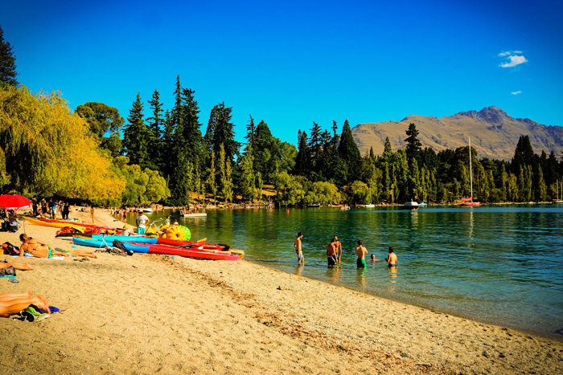

Queenstown Beach
Queenstown Tourist Location
Queenstown's Beautiful Lakeside Beach!
Queenstown Beach is a popular lakeside destination located
in the heart of Queenstown, beside the beautiful waters of
Lake Wakatipu. Surrounded by mountains, the beach provides
spectacular views of the lake and the Southern Alps,
making it one of the city's most scenic places to visit.
Visitors can relax beside the lake, walk along the
waterfront, take photographs, or enjoy the views from the
nearby Queenstown Gardens. The area is also a convenient
starting point for exploring the town, with cafes,
restaurants, shops, and other attractions located nearby.
Queenstown Beach is especially popular during warmer
weather when visitors can enjoy the lakeside atmosphere
and spend time outdoors. The surrounding mountains also
make the area a great location for photography, especially
during sunrise and sunset.
Access to Queenstown Beach is free, making it an affordable
attraction for visitors. Travellers should consider the
cost of food, parking, and transport, while additional
activities around Lake Wakatipu may have separate costs.
Facts:
- Located in central Queenstown
- Situated beside Lake Wakatipu
- Surrounded by mountains and alpine scenery
- Popular for walking and sightseeing
- Great location for photography
- Close to Queenstown Gardens
- Surrounded by cafes, restaurants, and shops
- Free to access
Costs:
- Entry to Queenstown Beach: Free
- Walking and sightseeing: Free
- Estimated food costs: $10-$35 per person
- Estimated transport costs: $5-$20
- Estimated parking costs: $0-$15
- Optional lake activities: approximately $30-$150 per person
- Estimated basic visit cost: $15-$70 per person